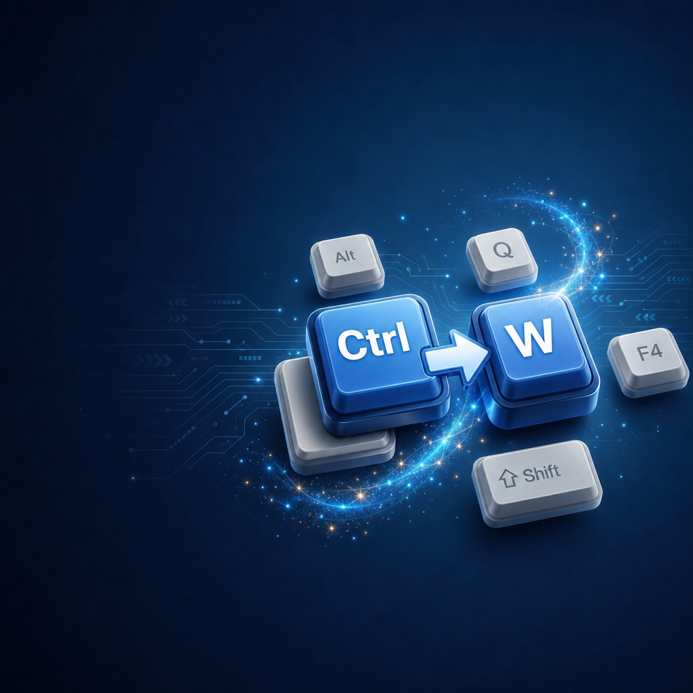
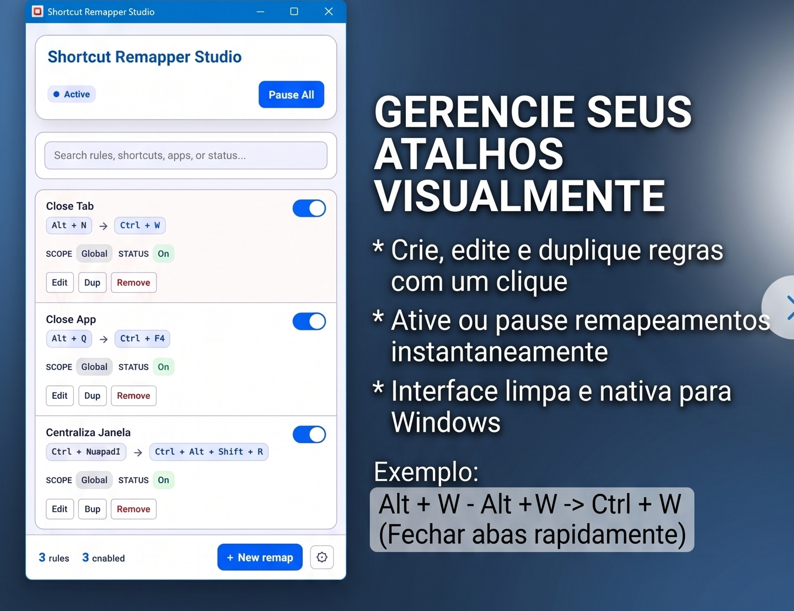
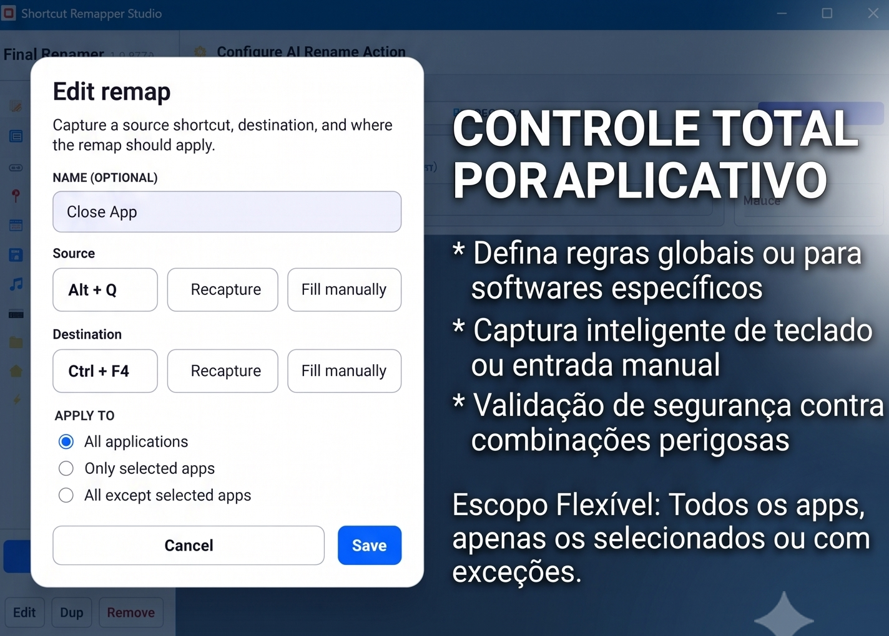

Remapeamento visual
Capture a origem e o destino, dê um nome à regra e revise tudo antes de salvar.
Novo para Windows
Remapeie o teclado com controle visual, por aplicativo e sem depender de AutoHotkey.

Troque combinações difíceis por atalhos naturais e mantenha cada regra sob controle.
Capture a origem e o destino, dê um nome à regra e revise tudo antes de salvar.
Use atalhos globais, limite a aplicativos escolhidos ou crie exceções específicas.
Suspenda todas as regras de uma vez ou ative somente o que precisa naquele momento.
Importe e exporte suas regras em JSON para manter uma cópia local ou migrar de PC.
Veja regras, escopos e estados em uma única tela. Edite, duplique ou pause sem procurar em arquivos de script.


Atalhos poderosos não precisam de uma configuração complicada.
Suas regras ficam no computador. O app não exige conta, não coleta o que você digita e não envia telemetria aos servidores da WPC Solutions.
Disponível para Windows 10 versão 19041 ou posterior e Windows 11.